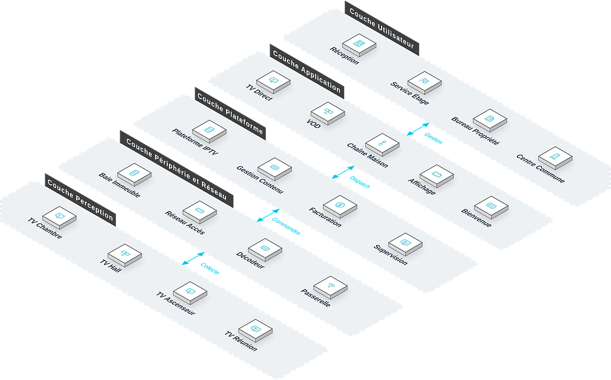

Pour les hôtels, résidences, appartements en location longue durée et maisons de retraite, une solution de divertissement TV et de publication d'informations sur réseau IP qui répond aux points de douleur clés que sont le coût élevé du câblage, la difficulté de personnalisation des contenus et le manque de services à valeur ajoutée, réalisant l'intégration TV et services d'informations sur IP.
Vue d'ensemble
Fournit des services de divertissement TV et de publication d'informations sur réseau IP pour les hôtels, résidences, appartements en location longue durée et maisons de retraite, répondant au coût élevé du câblage, à la difficulté de personnalisation et au manque de services à valeur ajoutée de la télévision par câble traditionnelle, et réalisant l'intégration sur IP du divertissement et des services d'informations.
Applicable à : Chambres d'hôtel, halls d'hôtel, salons de résidence, appartements en location longue durée, maisons de retraite.
- Transmission sur réseau IP, sans câble coaxial dédié
- Interactivité multi-écrans TV, mobile et tablette
- Contenus personnalisables, avec placement de marque
- Déploiement cloud ou local selon l'ampleur du besoin
Bénéfices : Satisfaction client accrue, revenus supplémentaires par les services à valeur ajoutée, coûts de câblage et de maintenance réduits.
Défis Métier
Dans l'exploitation d'hôtels et de résidences, les clients font souvent face à des coûts de câblage TV élevés, à des contenus non personnalisables et à des services à valeur ajoutée absents ; ils ont besoin d'une plateforme TV et d'information sur IP, personnalisable et capable de porter des services à valeur ajoutée.
Coût de câblage élevé
La TV par câble traditionnelle exige un câblage coaxial dédié — chantier complexe et maintenance coûteuse.
Contenus non personnalisables
Les grilles de chaînes fixes laissent peu de place à l'image de marque de l'hôtel ni aux guides de services.
Services à valeur ajoutée absents
La TV ne donne pas accès au room service, aux réveils ni à la consultation des notes.
Une gestion par chambre qui pénalise l'exploitation
Des TV configurées une à une sont difficiles à gérer de façon centralisée ; l'expérience client et l'efficacité pâtissent ensemble.
Service TV multi-écrans sur IP
La diffusion sur réseau IP doit couvrir TV, téléphone et tablette.
Exploitation de contenus de marque
L'habillage de marque, les pages d'accueil personnalisées et les entrées de services à valeur ajoutée sont nécessaires.
Scénarios typiques :
Rôles concernés : Responsables d'exploitation hôtelière, gestionnaires de résidence, équipes TI.
Architecture
IPTV Hôtel/Communauté repose sur une topologie métier à cinq couches : Réception, Service Étage et autres bureaux utilisent les applications quotidiennes comme TV Direct et VOD, coordonnés par la couche plateforme ; les équipements de périphérie (Baie Immeuble, Réseau Accès) sur site raccordent les équipements de perception (TV Chambre, TV Hall) : les données montent vers la plateforme et les commandes descendent jusqu'au terrain.

Disposition métier : la couche utilisateur regroupe les bureaux (Réception, Service Étage…) ; la couche application porte les fonctions quotidiennes ; la plateforme fournit Plateforme IPTV et Gestion Contenu ; la couche périphérie et réseau situe les équipements sur site (Baie Immeuble, Réseau Accès…) ; les équipements de perception sont déployés sur TV Chambre, TV Hall et le terrain.
Modules clés
Contenus multi-sources
Signaux satellite, câble et OTT unifiés avec une programmation de chaînes flexible.
Contenus de marque
Habillage de marque de l'hôtel, pages d'accueil personnalisées et guides de services.
Entrée des services clients
Commande en chambre, réveil, blanchisserie, taxi et consultation de note depuis la TV.
Gestion centralisée multi-chambres
Configuration par chambre, gestion par lots et suivi de l'état.
Cloud ou local
Choisir le modèle de déploiement adapté à l'échelle de l'établissement.
Capacités d'intégration :
- Intégration au PMS hôtelier : page d'accueil personnalisée automatique et consultation des notes
- Services clients (commande, réveil, blanchisserie, taxi) accessibles depuis la TV
- Configuration par chambre avec gestion centralisée
Avantages et livraison
Avec une plateforme de services TV sur IP et la capacité d'intégration aux métiers de l'hôtellerie, nous aidons à élever la satisfaction des clients et à créer de nouveaux revenus à valeur ajoutée, avec évaluation du réseau, déploiement de la plateforme, configuration des contenus et formation.
Avantages différenciants
Sans câble coaxial
Partage l'infrastructure IP : économie de câblage dédié, idéal en rénovation d'immeubles anciens.
Marque et page d'accueil
La télévision de la chambre affiche la marque et un message de bienvenue personnalisé.
Portail de revenus additionnels
La TV devient un portail de services : restauration, blanchisserie, réservations.
Déploiement flexible
Cloud ou local selon les besoins, adapté aux hôtels indépendants comme aux chaînes.
Gestion multi-chaînes
Direct, à la demande, décalé et reprise : programmation flexible et maîtrisée.
Intégration PMS
Interfaces standard vers le PMS : état des chambres, facturation et fidélité synchronisés.
Processus de mise en œuvre
Étude des besoins
Recenser les chaînes, contenus de marque et services à valeur ajoutée.
Évaluation réseau
Évaluer la bande passante IP et les conditions d'accès des terminaux.
Déploiement plateforme
Déployer la plateforme en mode cloud ou local.
Configuration des contenus
Programmation des chaînes, page d'accueil et portails de services.
Installation des terminaux
Installer et régler les terminaux des chambres et parties communes.
Formation et remise
Former le personnel d'exploitation avant remise.
Garantie de service
Valeur client
Satisfaction client et image de marque renforcées, revenus additionnels via les services, coûts de câblage et de maintenance réduits par rapport au câble classique.